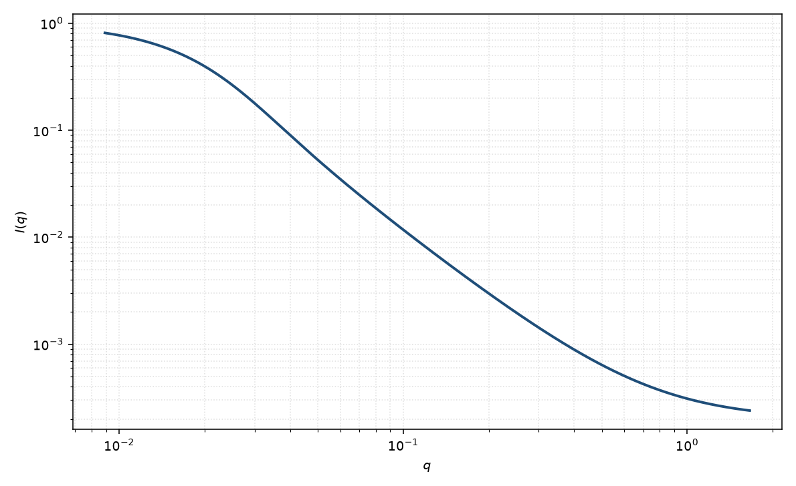

星形聚合物
star polymer
适用场景
多条高斯臂从同一中心长出、核可忽略时，用 Benoit 星形因子。臂数 $f$ 增大使中间 $q$ 比线形链更“密实”，但仍不是硬球振荡。
有明显致密核时用聚合物胶束。臂有排除体积或静电时，本页的高斯臂假定失效。
物理图像
Benoit 对 $f$ 条高斯臂做构象平均。令 $v=q^2 R_{g,\mathrm{arm}}^2$，形式因子含单臂 Debye 与臂间交叉项。整星 $R_g$ 随 $f$ 增加而小于同分子量线形链。
取向平均已包含。磁性若只标记核，曲线接近小球而不是星。
示意图

核心公式
出发点
$f$ 条高斯臂从同一中心长出。链段对要么在同一臂上（单臂 Debye），要么分属两臂（各从中心出发的两端距相乘）。对构象做高斯平均即 Benoit 星形因子。
推导
单臂上相隔 $n$ 个单体：$\langle\mathrm{e}^{iq\cdot R}\rangle=\mathrm{e}^{-q^2 nb^2/6}$。两臂上的单体到中心的位移独立，交叉项是两个 $(1-\mathrm{e}^{-v})/v$ 型因子的积。令 $v=q^2 R_{g,\mathrm{arm}}^2$，对臂内与臂间求和，得到
$$P(q)=\frac{2}{f v^2}\left[v-1+\mathrm{e}^{-v}+\frac{f-1}{2}(1-\mathrm{e}^{-v})^2\right].$$$f=1$ 或 $2$：臂间项消失或并入一条线形链，回到 Debye。整星回转半径由各臂二阶矩与交叉矩合成
$$R_g^2=\frac{3f-2}{f}\,R_{g,\mathrm{arm}}^2.$$低 $q$ 与渐近
低 $q$：$P=1-q^2 R_g^2/3+\cdots$，用的是整星 $R_g$，同一分子量下比线形链更小。高 $q$ 看见单臂高斯统计，仍 $\sim q^{-2}$；大 $f$ 时中间区更早偏离 Debye、更像密实物体，但不产生硬球振荡。有致密核时应改用胶束，而不是加大 $f$。
参数表
| 参数 | 符号 | 含义 | 单位 | 典型范围 |
|---|---|---|---|---|
| 臂回转半径 | $R_{g,\mathrm{arm}}$ | 单臂 $R_g$ | Å | 10–200 Å |
| 臂数 | $f$ | 从中心长出的臂 | 无量纲 | 通常 $3$–$64$ |
| 前向散射 | $I(0)$ | 与数密度、总分子量有关 | 与强度单位一致 | 绝对标定 |
| 标度 / 本底 | $\mathrm{scale}$, $B$ | 前置因子与常数本底 | 与强度单位一致 | 实验相关 |
拟合注意
取向：溶液中各向同性。剪切可能拉直臂，表观 $f$ 会错。
臂长多分散相当于把 $v$ 平均，与 $f$ 相关。磁性核与臂衬度不同时，应回到胶束模型。
可辨识性：大 $f$ 的星在有限 $q$ 窗口里像模糊球。没有高分子量极限的 $q^{-2}$ 臂尾时，不要声称 $f$。
相近模型
参考文献
- Benoit, H. On the effect of branching and polydispersity on the angular distribution of the light scattered by Gaussian coils. J. Polym. Sci. 1953, 11, 507–510. DOI: 10.1002/pol.1953.120110512
- Dozier, W. D.; Huang, J. S.; Fetters, L. J. Colloidal nature of star polymer dilute and semidilute solutions. Macromolecules 1991, 24, 2810–2814. DOI: 10.1021/ma00010a026